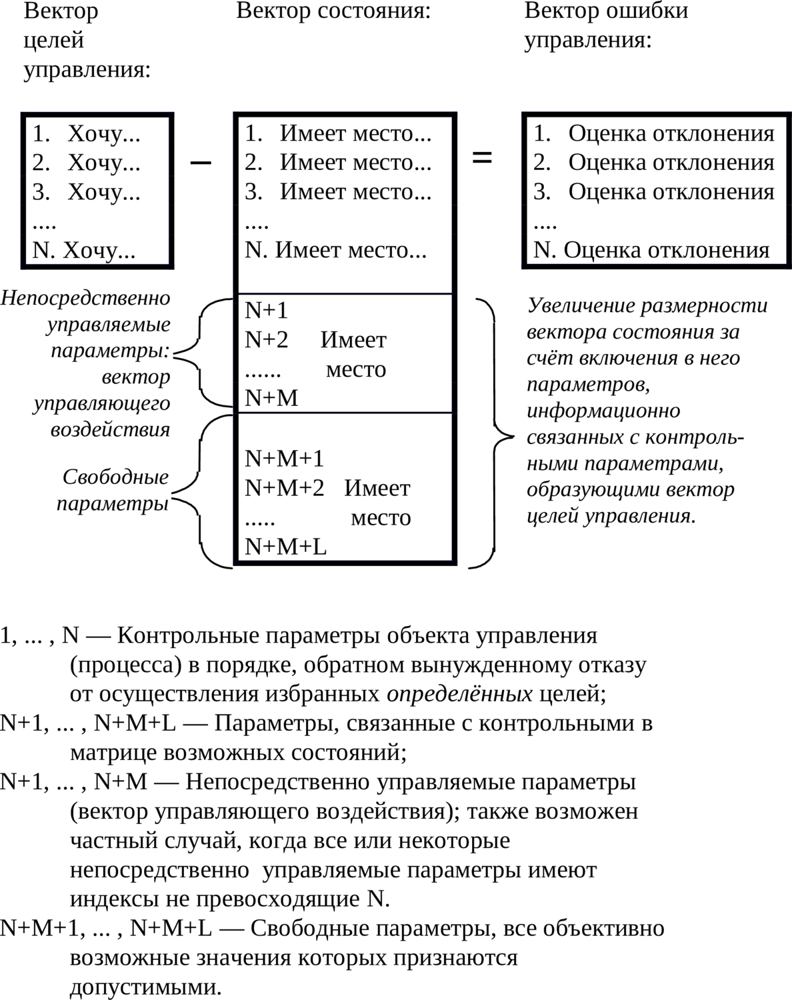

6.5. Вектора: целей, состояния, ошибки управления, их соотношение
Том 1 · osnovy-sociologii-tom-1.pdf · стр. 342 (кандидат) · Кандидат страницы PDF; требуется сверка · источник: PDF/DOC данной редакции.
ct-t1-06-05Содержит авторские утверждения; их фактическая достоверность оценивается отдельно.
6.5. Вектора: целей, состояния, ошибки управления, их соотношение
Для осознанной постановки и решения каждой из названных ранее или обеих задач теории управления совместно (когда одна сопутствует другой или они некоторым образом взаимно проникают друг в друга) необходимы три набора информации: вектор целей, вектор состояния, вектор ошибки управления.
Вектор1 целей управления (а равно — самоуправления, где не оговорено отличие), представляющий собой описание идеального режима функционирования (поведения) объекта (процесса).
Вектор целей управления строится по субъективному произволу как иерархически упорядоченное множество частных целей управления, которые должны быть осуществлены в случае идеального (безошибочного) управления. Порядок следования частных целей в нём — обратный порядку последовательного вынужденного отказа от каждой из них в случае невозможности осуществления полной совокупности целей. Соответственно на первом приоритете вектора целей стоит самая важная цель, на последнем — самая незначительная, отказ от которой допустим первым.
Образно говоря, вектор целей — это список, перечень того, чего желаем, с номерами, назначенными в порядке, обратном порядку вынужденного отказа от осуществления каждого из этих желаний. Если несколько целей представляются равнозначными, то они в совокупности образуют интегральную цель на соответствующем приоритете вектора целей.
Одна и та же совокупность целей, подчинённых разным иерархиям приоритетов (разным порядкам значимости для управленца), образует разные вектора целей, что ведёт и к возможному различию в управлении, в том числе и вследствие возникновения различий в построении критериев оптимальности управления и расчёте их значений.
Дефективность вектора целей может быть возможной причиной низкого качества управления (вплоть до полной потери управления). Основные типы дефектов вектора целей приведены ниже:
выпадение из вектора некоторых целей, объективно необходимых для управления процессом;
выпадением всего вектора или каких-то его фрагментов из объективной матрицы возможных состояний объекта;
наличие в нём целей, объективно и субъективно взаимно исключающих друг друга;
наличие целей, неустойчивых в процессе управления (способных исчезать в процессе управления или утрачивать актуальность);
ошибки в иерархической упорядоченности целей в составе вектора:
<!-- -->
ошибочное задание приоритетов целей, в результате чего цели, приоритеты которых для успешного решения задачи управления должны быть ниже, обладают более высокими приоритетами, чем действительно значимые цели (один из вариантов — привязка низкоприоритетных по их существу целей к высокоприоритетным, в результате чего приоритеты каких-то целей могут быть занижены, а каких-то завышены, и на каком-то из приоритетов вектора целей образуется дефективная интегральная цель);
наличие нескольких экземпляров одних и тех же целей на разных приоритетах;
«закольцованность» иерархии значимости целей (либо её фрагментов)2.
Вектор целей управления может изменяться в процессе управления, будучи функцией времени (в обыденном понимании этого явления) либо функцией матрицы возможностей течения процесса управления (объективной меры бытия, как составляющей триединства материи-информации-меры) и субъективно избранной алгоритмики управления процессом. В этом случае вектор целей, строго говоря, не является «вектором» в математическом понимании этого термина, поскольку представляет собой множество векторов, характеризующих разные этапы процесса управления, упорядоченное в соответствии: 1) с матрицей возможностей и 2) разветвлениями алгоритмики управления процессом. Эта тема поясняется далее в комментариях к рис. 6.13-4 (в разделе 6.13). Памятуя об этом несоответствии терминологии ДОТУ нормам математики, мы, тем не менее, распространим и на этот случай употребление термина «вектор целей управления».
————————
В некоторых версиях теории управления по отношению к этому случаю употребляется термин «дерево целей», что подразумевает наличие преемственной последовательности целей, которая может разветвляться в процессе управления, и которые должны быть осуществлены в ходе реального управления на разных этапах процесса. Однако и вариант с «деревом целей» не отвечает требованию универсальности терминологии, поскольку, как показывает практика применения аппарата сетевого планирования, процесс управления может не только разветвляться, но и разного рода частные процессы управления могут сливаться воедино по достижении каких-то общих промежуточных для них целей. В этом случае можно было бы именовать совокупность целей термином «сеть целей», однако он интуитивно непонятен. Поэтому мы отдаём предпочтение расширительному толкованию термина «вектор целей управления», включая в него и тот случай, когда вектор целей может изменяться в процессе управления, будучи функцией времени либо функцией матрицы возможностей течения процесса управления и субъективно избранной алгоритмики управления процессом.
————————
Вектор (текущего) состояния имеет более сложную структуру, нежели вектор целей. Первый его блок — блок контрольных параметров, который вбирает в себя информацию, характеризующую реальное поведение объекта по параметрам, входящим в вектор целей.
Каждый из контрольных параметров в этом блоке может быть представлен в виде суммы трёх составляющих: первая характеризует «полезную отдачу» замкнутой системы (процесса управления), вторая представляет собой «собственные шумы» замкнутой системы, а третья — помехи, наводимые в ней извне. Собственные шумы системы и помехи, наводимые в ней извне, так или иначе снижают качество управления и потому их можно выделить в отдельные компоненты вектора текущего состояния, что породит соответствующие им компоненты в составе вектора целей. такой подход потребует и соответствующих управленческих мер, направленных на снижение уровней собственных шумов и помех в контрольных параметрах.
Либо при другом подходе к структурированию информации собственные шумы и помехи могут быть перенесены в правую часть уравнения на схеме рис. 6.5-1 — в состав вектора ошибки управления.
Названные два вектора (целей и состояния) образуют взаимосвязанную пару, в которой каждый из этих двух векторов представляет собой упорядоченное множество информационных модулей, описывающих те или иные параметры объекта, определённо соответствующие частным целям управления. Упорядоченность информационных модулей в векторе состояния повторяет иерархию вектора целей. Образно говоря, вектор состояния это — список, как и первый, но того, что воспринимается в качестве состояния объекта управления, реально имеющего место в действительности.
В подавляющем большинстве случаев непосредственное воздействие на параметры, входящие в вектор целей управления, оказывается невозможным. Именно это обстоятельство и вызывает потребность в организации управления путём решения задачи об устойчивости в смысле предсказуемости поведения и выявления параметров, на которые возможно оказать непосредственное воздействие, следствием которого будет желательное изменение контрольных параметров, входящих в вектор целей.
Реализация такого подхода (в подавляющем большинстве случаев неизбежного) приводит к тому, что размерность вектора состояния больше, чем размерность вектора целей за счёт включения в него параметров, связанных в матрице возможных состояний с параметрами, включёнными в вектор целей. Эти дополнительные параметры можно разделить на две группы:
В первую входят параметры, которые поддаются непосредственному изменению. Из их перечня выбираются параметры, на которые в процессе управления будет оказываться управляющее воздействие. Это — непосредственно управляемые параметры, изменение которых влечёт за собой изменение параметров, включённых в вектор целей. Эти параметры образуют вектор управляющего воздействия. В ряде случаев непосредственно управляемые параметры могут входить в состав вектора целей (например, на кораблях при больших скоростях хода, чтобы предотвратить недопустимый крен в процессе поворота, а то и опрокидывание корабля, могут налагаться ограничения на угол перекладки руля, который в задачах управления маневрированием, в отличие от угла курса, скорости хода, координат, обычно не входит в перечень контрольных параметров).
Во вторую группу входят так называемые «свободные параметры», любые возможные значения которых в процессе управления признаются допустимыми (если бы на них накладывались какие-либо ограничения, то они с этими ограничениями вошли бы в вектор целей).
Поскольку восприятие субъектом состояния объекта не идеально (во-первых, в силу искажения информации, исходящей от объекта, «шумами» среды, через которую проходят информационные потоки; во-вторых, оно носит характер, обусловленный особенностями субъекта в восприятии и переработке информации), вектор состояния всегда содержит в себе некоторую ошибку в определении истинного состояния, которой соответствует некоторая объективная неопределённость для субъекта управленца. Неопределённость объективна, т.е. в принципе не может быть устранена усилиями субъекта. Другое дело, что объективная неопределённость может быть как допустимой, так и недопустимой для осуществления целей конкретного процесса управления.
Вектор ошибки управления представляет собой «разность» (в кавычках потому, что разность не обязательно привычная алгебраическая): «вектор целей» − «вектор состояния». В него могут входить как измеримые отклонения вектора состояния от вектора целей, так и оценки (как это показано на схеме рис. 6.5-1 — ниже по тексту), необходимость в которых может возникать вследствие того, что вектор текущего состояния включает в себя некоторую неопределённость. Вектор ошибки управления описывает отклонение реального процесса от предписанного вектором целей идеального режима и также несёт в себе некоторую неопределённость, унаследованную им от вектора состояния. Образно говоря, вектор ошибки управления это — перечень неудовлетворённых желаний соответственно перечню вектора целей с какими-то измерениями или оценками степени неудовлетворённости каждого из них. Оценки могут быть построены на основе соизмеримых друг с другом численно уровней, либо численно несоизмеримых уровней, но упорядоченных ступенчато дискретными целочисленными индексами предпочтительности каждого из уровней в сопоставлении его со всеми прочими уровнями.
Помимо исходного различия вектора целей и вектора состояния в момент начала управления источниками ошибок управления реально являются: 1) алгоритмика выработки управляющего воздействия системой управления, которая в принципе не может гарантировать идеального управления с нулевыми компонентами вектора ошибки, 2) собственные шумы в замкнутой системе3, 3) помехи извне, включающие в себя воздействие среды, а также и целенаправленные попытки перехвата управления со стороны иных субъектов.
Структура и соотношение информации, входящей в перечисленные вектора, характеризующие процесс управления, показаны на схеме рис. 6.5-1, приведённой ниже.
Если эту форму не удаётся заполнить метрологически состоятельной информацией, то это — показатель того, что задача управления не может быть даже поставлена, а не то, что решена.

Рис. 6.5-1. Структурирование информации,
характеризующей процесс управления
Задача управления в своём существе — достичь целей, а равно — обнулить вектор ошибки управления.
Реально вектор ошибки не может быть сделан идеально нулевым как вследствие объективных причин, так и вследствие разного рода неточностей и запаздываний в процессе управления, которые обусловлены субъективными причинами в ходе организации управления. Соответственно этому обстоятельству реальное управление может протекать в одном из трёх режимов:
Нормальное управление — в нём реально ненулевые значения компонент вектора ошибки управления оцениваются как вполне приемлемые (они могут при этом находиться в пределах погрешности измерений — в этом случае достигаются значения так называемого «технического нуля» либо могут считаться приближённо равными нулю4).
Допустимое управление — в нём реально ненулевые значения компонент вектора ошибки находятся в пределах, признаваемых допустимыми, но допустимое управление по своим характеристикам хуже, чем нормальное.
Аварийное управление — в нём те или иные компоненты вектора ошибки выходят за допустимые пределы, но катастрофа управления (необратимая потеря управления, повреждения, разрушение объекта управления или нанесение им ущерба элементам внешней среды) ещё не наступила. В режиме аварийного управления главной целью управления становится возвращение объекта хотя бы в режим допустимого управления.
Аварийное управление — один из тех случаев, в которых иерархическая упорядоченность компонент вектора целей и его состав могут изменяться в процессе управления, что влечёт за собой изменение и всей структуры информации в задаче управления.
Разграничение нормального и допустимого управления носит либо субъективно обусловленный характер, либо диктуется самой задачей управления.
Также надо понимать, что в силу субъективизма управленцев, формула взаимосвязи трёх названных векторов, приведённая на схеме рис. 6.5-1 («вектор целей» − «вектор состояния» = «вектор ошибки управления»), допускает обмен местами в ней «вектора целей» и «вектора ошибки управления»: т.е. возможны ситуации, в которых вектор состояния, который с точки зрения одного субъекта-управленца — ошибка управления, для другого — успешно достигнутая цель.
В наиболее общем случае под термином «вектор» подразумевается — не отрезок со стрелочкой, указывающей направление, а упорядоченный перечень (т.е. с номерами) разнокачественной информации. В пределах же каждого качества должна быть определена хоть в каком-нибудь смысле мера качества. Благодаря этому сложение и вычитание векторов обладают некоторым смыслом, определяемым при построении векторного пространства параметров. Именно поэтому вектор целей — не дорожный указатель «туда», хотя смысл такого дорожного указателя и близок к понятию «вектор целей управления». Кроме того компонентами вектора целей могут быть не константы, а функции одного или более аргументов.↩
«Закольцованность» рангов имеет место в некоторых карточных играх: самая слабая карта — шестёрка, но только она бьёт туза. Аналогично этому может иметь место «закольцованность» иерархической упорядоченности по значимости целей в их полном перечне. Если «закольцованность» — неизбежность, то возможно разделение управленческой задачи на последовательные этапы, на каждом из которых «закольцованность» разрывается и иерархия вектора целей обретает определённость.↩
Замкнутая система — объект управления и система управления им, связанные друг с другом каналами обмена информацией.↩
Однако при этом надо помнить, что с точки зрения вычислительной математики два ЛЮБЫХ числа приближённо равны, и потому практически вопрос только в том: можно ли в осуществляемом процессе управления ненулевые компоненты вектора ошибки считать приближённо нулевыми?↩